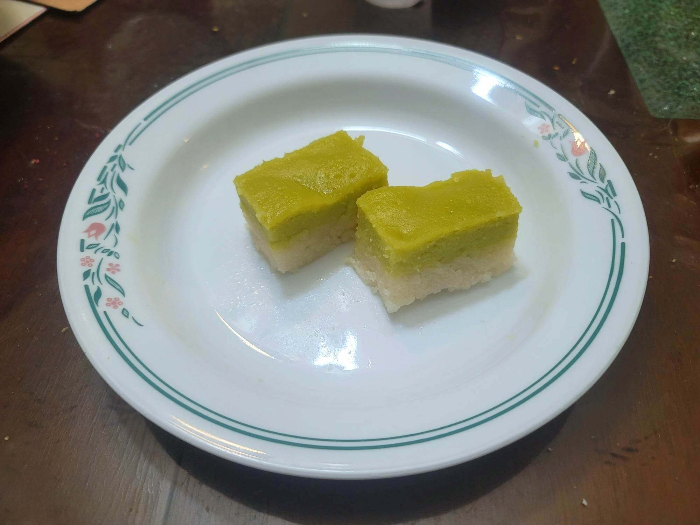

Kuih Seri Muka

Ingredients:
Rice Layer:
- 300 g Glutinous rice, soaked in water for 30 minutes
- 100 ml Coconut milk
- 100 ml Water
- 2 Pandan leaves, tied in a knot
- 1 tsp Salt
Custard Layer:
- 200 ml Coconut cream
- 2 Large eggs
- 2 Egg yolks
- 170 g Sugar
- 100 ml Pandan juice
- 5 tbsp Flour
- 2 tbsp Cornstarch
Pandan Juice:
- 15-20 Pandan leaves
- 200 ml Water
Instructions:
- For the pandan juice, blend together the pandan leaves and water in a blender. Then use a cheese cloth to strain out all the liquid.
- Combine the rice ingredients into an 8x8" brownie pan and place into a steamer. Steam over high heat for 20 minutes.
- Meanwhile, for the custard, prepare a double boiler. Whisk together the custard ingredients in a large bowl until smooth. Then place over the double boiler and whisk until thickened slightly, but still thin enough to be pourable.
- Once the rice layer is finished, remove it from the steamer. Remove the pandan leaves. Use a flat object to flatten rice into a compact even layer. Then pour the custard through a sieve and over the rice layer. Shake the brownie pan a little to even out the custard. Place back into the steamer over medium heat to steam for 30 minutes.
- Remove from the steamer and let cool before slicing into diamonds or rectangles. Serve immediately.